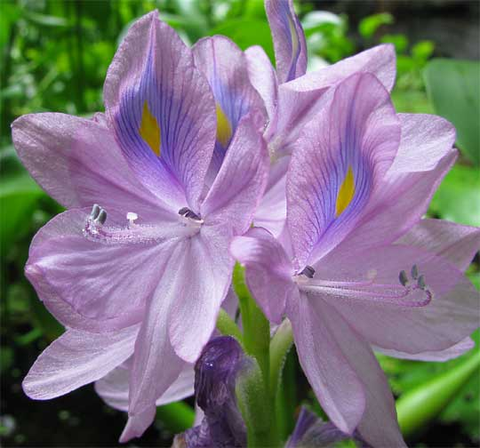
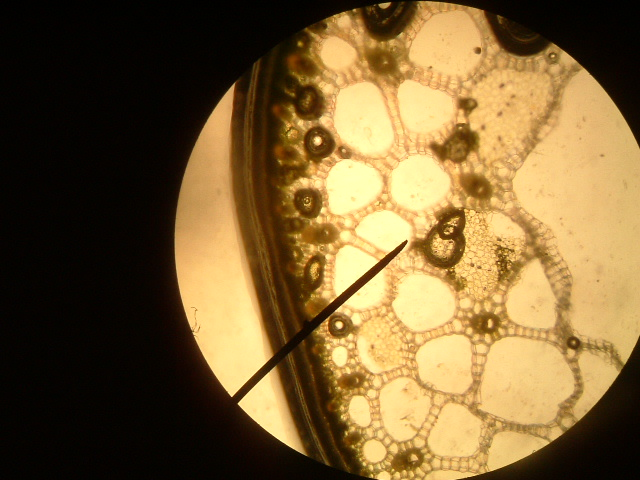
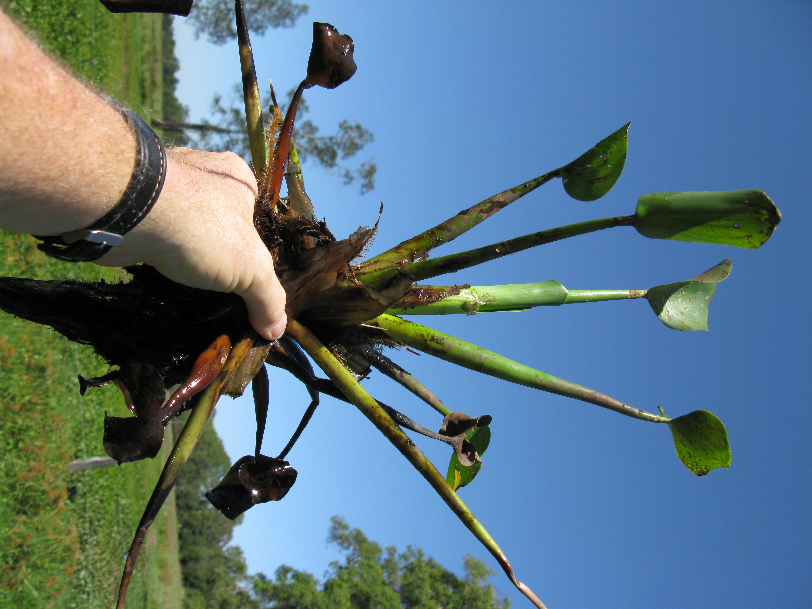
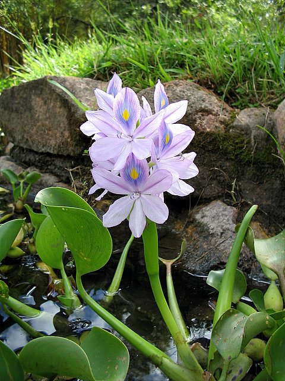

👥 第 3 組 ｜ 綠境探索隊
🎓 組員：謝佳緯、張祐仁、榮舫
布袋蓮水箱浮力探索平台
漂浮性水生植物
相機對準 AR Code 浮現擬真教學水箱，可拖動滑桿觀察水位浮動
📷 請點擊下方「開啟相機」對準【AR Code 圖檔】
✨
AR Code 辨識成功！高擬真教學水箱已投影至鏡頭中
🌱 膨大葉柄(氣室)
🌸 鳳眼藍花被
🪸 羽狀懸浮鬚根
🍃 倒卵形革質葉
🔬 真實標本對照
💧 水箱水位調節 (Water Level)
水位：55 cm (標準水深)
低水位 20cm
高水位 85cm
💡
科學觀察
：拖動滑桿調整水位，觀察布袋蓮如何憑藉葉柄膨大氣室，隨水面起伏而始終浮於水表！
構造名稱
✕
構造說明
🔬
真實布袋蓮生態標本對照庫
✕

🌸 經典鳳眼藍花被特寫 (頂瓣孔雀藍光暈與黃眼斑)
花冠六裂片呈漏斗狀，頂端裂片中央具備鮮明金黃蜜標（Yellow Honey Guide）與孔雀藍天目光暈，周邊花瓣為粉淡紫藍色，能強烈誘引昆蟲傳粉。

🌱 膨大葉柄海綿氣室橫切面 (通氣組織 Aerenchyma)
實體切面展示密如蜂巢的發達通氣腔體，內部飽含微氣泡，這就是布袋蓮能輕鬆承載整株重量漂浮在水面的關鍵生物構造。

🪸 布袋蓮整株全貌 (膨大海綿葉柄與水下黑紫羽狀根)
水下鬚根長度可達植株 1.5 倍以上，呈深藍黑紫色，兩側密生如鳥羽般纖細側根，發揮水中阻力與龍骨配重平衡作用，防止風浪翻側。

🍃 倒卵形革質葉片群落 (疏水蠟質層)
葉面微凹呈心匙狀，表面覆蓋厚厚的疏水蠟質層，雨水水滴滾落不黏附，確保氣孔正常進行光合作用。